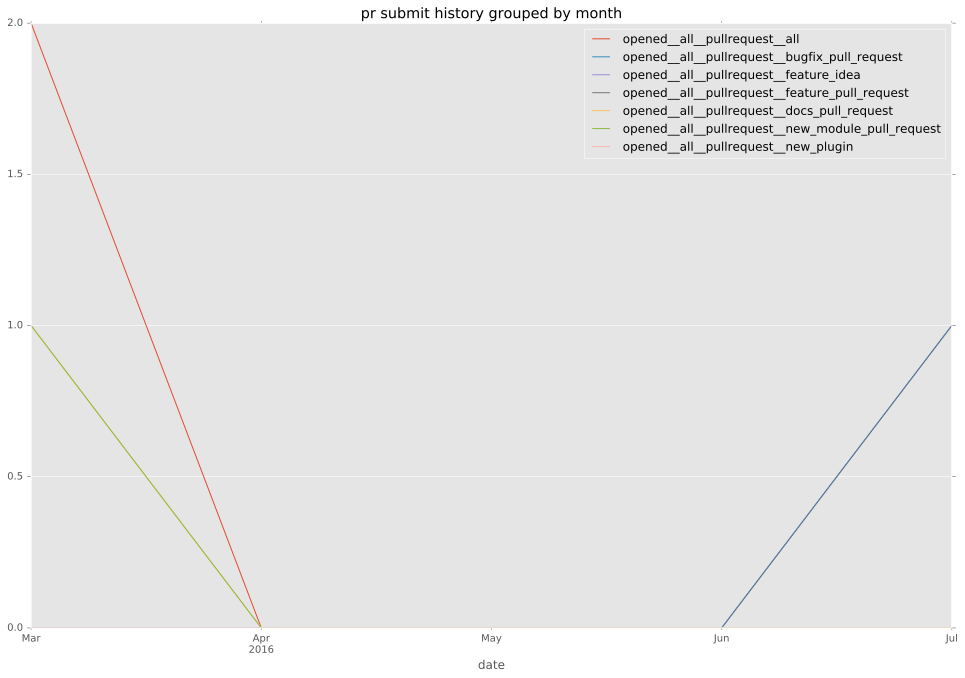
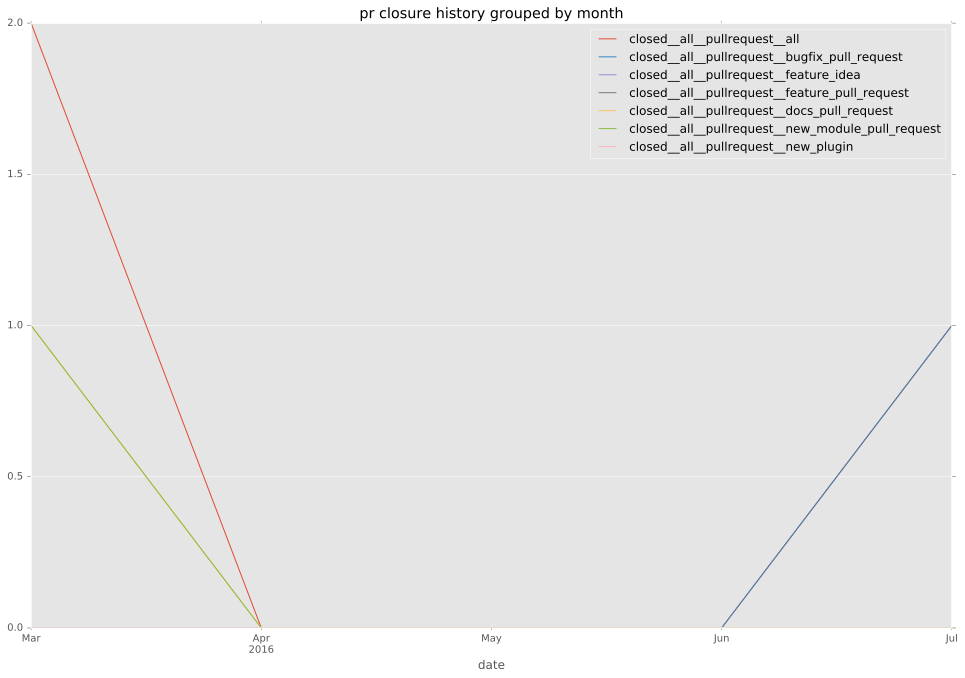

authors
- emonty
- Shrews
maintainers
- emonty
- shrews
- juliakreger
- j2sol
- rcarrillocruz
contributors
- Shrews : 3 commits
- resmo : 1 commits
- alvaroaleman : 1 commits
total issue counts
bugfix pull request: 2
pullrequest: 4
issue: 1
new plugin: 2
bug report: 1
issue history
pullrequest history


days open by issue type
all
count: 8
std: 74.297543701
min: 0
max: 215
median: 4.0
mean: 31.875
pullrequest
count: 0
std: nan
min: nan
max: nan
median: nan
mean: nan
bugfix pull request
count: 4
std: 9.23760430703
min: 0
max: 16
median: 8.0
mean: 8.0
issue
count: 0
std: nan
min: nan
max: nan
median: nan
mean: nan
new plugin
count: 3
std: 121.820906799
min: 4
max: 215
median: 4.0
mean: 74.3333333333
bug report
count: 1
std: nan
min: 0
max: 0
median: 0.0
mean: 0.0
closures grouped by total days open